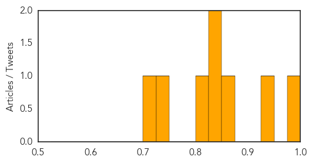
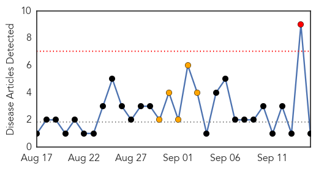
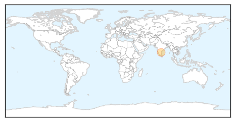

West Nile Virus
30-Day Web Trend
1 alerts, 0 warnings

30-Day Twitter Trend
1 alerts, 0 warnings

Article Locations

Article Confidences
Top Articles:
- 0.990
- Glenn Heights resident identified as sixteenth human case of West Nile Virus
- 0.935
- First West Nile virus case of 2015 confirmed in Long Beach
- 0.857
- Pettis County resident with West Nile Virus dies in Mid-Missouri
- 0.835
- Fresno County confirms year's first case of West Nile
- 0.834
- MSDH confirms new cases of West Nile virus in Mississippi
- 0.805
- West Nile found in mosquitoes in Tiverton
- 0.730
- West Nile Virus Found in Tiverton Mosquito
- 0.713
- Wall woman is NJ's second West Nile death
Top Tweets:
-
No tweets found for Sep 15, 2015
Swine Flu
30-Day Web Trend
1 alerts, 5 warnings

30-Day Twitter Trend
1 alerts, 0 warnings

Article Locations
Article Confidences

Top Articles:
Top Tweets:
-
No tweets found for Sep 15, 2015